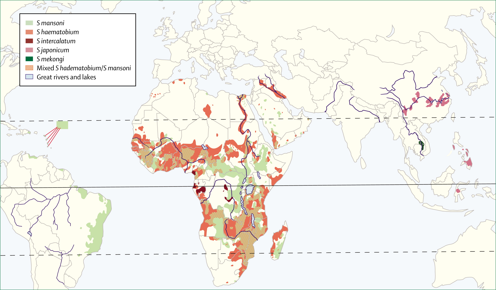

Schistosomiase
Bilharziose — Schistosoma mansoni, S. haematobium, S. japonicum, S. mekongi, S. intercalatum
Deuxième helminthiase importée en Europe après la strongyloïdose. Trois phases cliniques distinctes — de la dermatite cercarienne bénigne à la fibrose hépatique irréversible. Le timing du diagnostic et du traitement est critique : sérologie négative en phase aiguë, praziquantel inefficace sur les formes immatures.
Épidémiologie
Charge mondiale
- Selon l'OMS, au moins 253,7 millions de personnes nécessitaient un traitement préventif en 2024, dont >100,5 millions effectivement traitées[1]
- Cinq espèces pathogènes pour l'homme : S. haematobium, S. mansoni, S. japonicum, S. mekongi, S. intercalatum
- Maladie tropicale négligée ciblée par l'OMS pour le contrôle et l'élimination[27]
Cas importés en Europe et en Suisse
- 2e helminthiase importée la plus fréquente après la strongyloïdose chez les migrants et voyageurs en Europe ; réseau TropNetEurop : >160 cas/an[2]
- GeoSentinel (2016–2018) : sur 5 319 réfugiés/migrants évalués, schistosomiase principalement d'origine africaine (480/510 = 94 %)[4]
- Réseau +Redivi (Espagne, 2012–2022) : tendance à l'augmentation des diagnostics ; 82,3 % des cas acquis en Afrique[3]
- Cohorte Barcelone (2009–2022) : 917 cas, dont 96 (10,5 %) liés au voyage ; 88,5 % diagnostiqués par sérologie seule (oeufs trouvés dans seulement 11,5 %)[5]
- Séroprévalence chez les migrants : 18,4 % globale, 24,1 % si Afrique sub-saharienne
- Cohorte suisse (Rochat L et al., Rev Med Suisse 2015, n=42) : sous-diagnostic fréquent par le médecin de premier recours ; exposition au Lac Malawi prédominante
⚠ Cas suisse remarquable
Staehelin C et al. (J Travel Med 2025) : infection active à S. mansoni diagnostiquée 41 ans après la dernière exposition (baignade unique au Lac Kivu, Rwanda) — démontrant la longévité extraordinaire du parasite sans réplication chez l'hôte humain.[6]
Transmission autochtone en Europe
- Corse (France), 2013–2014 : première transmission autochtone de schistosomiase humaine en Europe moderne ; parasite hybride S. haematobium / S. bovis (77 % génome S. haematobium, 23 % S. bovis)[7,8]
- Espagne du Sud : transmission autochtone rétrospectivement confirmée[9]
- Risque en Italie : Bulinus truncatus (mollusque vecteur) endémique en Sardaigne et Sicile ; risque de cycle autochtone si introduction par migrants/touristes[9]
- Génotypes hybrides : grande variation de génotypes purs et hybrides chez les migrants sub-sahariens en Europe du Sud-Ouest[10]
Implication pour le clinicien suisse
Ne pas exclure une schistosomiase chez un patient n'ayant jamais voyagé en zone tropicale — une exposition en Corse ou en Espagne du Sud est possible.
Répartition géographique

| Espèce | Répartition | Tropisme | Mollusque hôte |
|---|---|---|---|
| S. haematobium | Afrique, Moyen-Orient, Corse | Uro-génital | Bulinus spp. |
| S. mansoni | Afrique, Amérique du Sud, Caraïbes | Intestinal / hépatique | Biomphalaria spp. |
| S. japonicum | Chine, Philippines, Indonésie | Intestinal / hépatique (le plus pathogène) | Oncomelania spp. |
| S. mekongi | Cambodge, Laos | Intestinal / hépatique | Neotricula spp. |
| S. intercalatum | Afrique Centrale | Intestinal | Bulinus spp. |
Cycle parasitaire
Le cycle de Schistosoma implique obligatoirement un mollusque d'eau douce comme hôte intermédiaire. La compréhension du cycle est essentielle pour le timing du diagnostic et du traitement.
- Pénétration transcutanée des cercaires en eau douce (lac, rivière, chute d'eau) → dermatite cercarienne
- Migration des schistosomules via les poumons vers le système porte (2–6 semaines) → possibilité de fièvre de Katayama
- Maturation en vers adultes dans les plexus veineux (vésical pour S. haematobium, mésentérique pour les autres)
- Ponte des oeufs (≥10–12 semaines post-exposition) → granulomes tissulaires
- Excrétion des oeufs dans les selles ou l'urine → éclosion du miracidium en eau douce
- Multiplication dans le mollusque (4–6 semaines) → libération de cercaires
Longévité exceptionnelle
Les vers adultes vivent en moyenne 3–5 ans, mais des cas de survie >40 ans sont documentés (Staehelin 2025 : 41 ans après une exposition unique).[6] Il faut donc rechercher des expositions même très anciennes.
Présentation clinique
La schistosomiase évolue en trois phases cliniques successives, chacune ayant des implications diagnostiques et thérapeutiques distinctes.
Phase 1 — Dermatite cercarienne (swimmer's itch)
- Papules prurigineuses au site de pénétration des cercaires
- Apparition dans les minutes à heures après le contact avec l'eau
- Souvent auto-limitée en 1–2 semaines
- Fréquemment rapportée après exposition au Lac Malawi, Lac Victoria, Lac Tanganyika
- Peut passer inaperçue — parfois mentionnée tardivement par le patient à l'interrogatoire
Phase 2 — Fièvre de Katayama (schistosomiase aiguë)
- Délai : 2–8 semaines après l'exposition (typiquement 4–8 semaines)
- Mécanisme : réaction d'hypersensibilité de type sérique aux schistosomules en migration et aux oeufs en dépôt précoce
- Symptômes : fièvre, frissons, myalgies, arthralgies, toux sèche, céphalées, diarrhées, urticaire
- Fréquence chez les voyageurs : environ 50 % des voyageurs infectés (non-immuns) présentent au moins un symptôme ; seuls 2 % ont un syndrome de Katayama classique complet[5]
- Biologie : éosinophilie souvent marquée (>1,5 G/L), parfois massive ; mais 15 % des éosinophiles sont normaux à la présentation
- Imagerie : RX thorax avec infiltrats diffus possibles ; CT avec nodules pulmonaires
⚠ Katayama déguisé
Demolder F et al. (Respir Med Case Rep 2024) : fièvre de Katayama diagnostiquée comme « asthme éosinophilique » avec nodules pulmonaires chez un voyageur de 26 ans revenu de Guinée. Diagnostic posé par reprise minutieuse de l'anamnèse (swimmer's itch mentionné tardivement).[11]
Phase 3 — Schistosomiase chronique
La majorité des patients sont asymptomatiques. Les vers adultes vivent dans les vaisseaux sanguins sans quasi aucun symptôme. Les signes cliniques sont dus au dépôt des oeufs dans les tissus, formant des granulomes.
| Espèce | Tropisme | Manifestations chroniques |
|---|---|---|
| S. mansoni / S. japonicum | Intestinal / hépatique | Douleurs abdominales, diarrhées, rectorragies ; fibrose périportale (Symmers) → hypertension portale, hépato-splénomégalie |
| S. haematobium | Uro-génital | Hématurie, dysurie, calcifications vésicales ; carcinome épidermoïde de la vessie (risque augmenté) ; schistosomiase génitale féminine (FGS) |
Schistosomiase génitale féminine (FGS)
>56 millions de femmes affectées en Afrique. Lésions cervico-vaginales, infertilité, grossesses ectopiques. Diagnostic souvent méconnu — penser à la colposcopie chez les femmes avec sérologie positive et symptômes génito-urinaires.[12]
Complications
- Fibrose périportale de Symmers (cirrhose bilharzienne) : S. mansoni, S. japonicum
- Hypertension portale avec varices oesophagiennes
- Uropathie obstructive : S. haematobium
- Hypertension pulmonaire
- Neuroschistosomiase (oeufs ectopiques) : myélite transverse (S. mansoni), encéphalite (S. japonicum)
- Carcinome épidermoïde de la vessie (S. haematobium)
Biologie
- Éosinophilie : souvent le premier et seul signe biologique anormal dans les premières semaines ; parfois massive (>3 G/L) en phase de Katayama
- Stix urinaire : éventuellement hématurie microscopique (S. haematobium)
- Transaminases : possiblement élevées en cas d'atteinte hépatique
- RX thorax / CT thorax : infiltrats diffus, nodules pulmonaires (phase aiguë)
- Échographie hépatique : épaississement des espaces portes (fibrose périportale)
- Échographie vésicale : calcifications pariétales (S. haematobium)
⚠ Éosinophilie normale ≠ exclusion
15 % des patients ont des éosinophiles normaux à la présentation. L'absence d'éosinophilie n'exclut pas le diagnostic de schistosomiase, en particulier dans les formes chroniques.
Diagnostic
Timing critique des examens
La compréhension du délai de positivation de chaque test est fondamentale pour éviter les faux négatifs — piège majeur chez le voyageur récemment exposé.
| Semaines post-exposition | Éosinophilie | Sérologie | Oeufs (selles/urine) | CAA sérique |
|---|---|---|---|---|
| 0–2 | +/− | − | − | − |
| 2–6 | + | − | − | +/− |
| 6–8 | + | +/− | − | + |
| ≥8–12 | + | + | +/− | + |
Légende : + = généralement positif ; +/− = variable ; − = généralement négatif
Tests diagnostiques disponibles
| Méthode | Sensibilité | Commentaire |
|---|---|---|
| Sérologie ELISA (SEA/AWA) | 71–96 % | Test de dépistage de référence chez le voyageur ; AWA-IFA > SEA-ELISA pour la détection d'exposition[13,14] |
| Sérologie IHA | ~43 % | Moins sensible que l'ELISA ; diminution significative après traitement (−5,73 unités/mois)[15] |
| Microscopie (selles/urine) | 20–40 % (1 échantillon) | Excrétion intermittente ; faible sensibilité chez les voyageurs avec faible charge parasitaire |
| CAA sérique (UCP-LF) | 86–97 % | Test le plus sensible pour le diagnostic précoce ET le suivi post-traitement ; détecte l'antigénémie du ver adulte ; positif chez 97 % des voyageurs belges à 7–8 sem post-exposition[14] |
| CAA urinaire | 38–43 % | Moins sensible que le CAA sérique |
| POC-CCA urinaire | ~30 % | Utilisé surtout en zone endémique (MDA) ; insuffisant chez les voyageurs |
| PCR (selles) | ~25 % | Sensibilité décevante dans les selles ; PCR urinaire souvent négative[13] |
Algorithme diagnostique pratique pour le MG suisse
- Toute exposition eau douce en Afrique (lac, rivière, chute d'eau) → dépistage systématique, même asymptomatique
- Bilan à ≥8 semaines post-exposition : FSC avec formule (éosinophiles), sérologie Schistosoma ELISA, sérologie Strongyloides (co-infection fréquente)
- Si sérologie positive → parasitologie selles ×3 et/ou examen urinaire (stix + microscopie par filtration)
- Si sérologie négative mais forte suspicion clinique → répéter à 3 mois post-exposition
- CAA sérique : disponible dans certains centres de référence — meilleur test pour confirmer une infection active et monitorer le traitement[14,28]
- Imagerie si atteinte d'organe suspectée : échographie hépatique (fibrose périportale), échographie vésicale (calcifications), CT thorax (nodules)
⚠ Piège majeur : sérologie négative en phase aiguë
La sérologie Schistosoma est NÉGATIVE dans les 6–8 premières semaines post-exposition. De plus, 14 % des sérologies restent négatives même à distance. Ne jamais exclure le diagnostic sur une sérologie unique négative — répéter à 3 mois.
Traitement
Praziquantel — Principe fondamental
Le praziquantel augmente la perméabilité au calcium du tégument du ver adulte, provoquant sa paralysie et sa destruction par le système immunitaire de l'hôte. Point critique : il est actif UNIQUEMENT sur les vers adultes ; les schistosomules (formes immatures) y sont résistantes.
⚠ Ne pas traiter trop tôt
Ne pas prescrire le praziquantel avant 6–8 semaines post-exposition (temps nécessaire à la maturation des vers). Un traitement trop précoce est INEFFICACE et donne une fausse réassurance. En phase de Katayama : corticoïdes d'abord, puis praziquantel différé.
Posologies
| Situation | Médicament | Posologie adulte | Remarques |
|---|---|---|---|
| S. mansoni / S. haematobium / S. intercalatum | Praziquantel | 40 mg/kg dose unique (ou 2×20 mg/kg à 4–6h d'intervalle) | Répéter à 4–6 semaines (certains experts recommandent systématiquement 2 cures) |
| S. japonicum / S. mekongi | Praziquantel | 60 mg/kg en 3 prises (3×20 mg/kg à 4–6h) | Charge parasitaire plus élevée ; même schéma de retraitement |
| Fièvre de Katayama (phase aiguë) | Corticoïdes + PZQ différé | Prednisone 0,5–1 mg/kg/j × 5–7 j ; puis PZQ à ≥6–8 sem post-exposition | Corticoïdes pour contrôler la réaction d'hypersensibilité ; NE PAS donner PZQ pendant la phase aiguë |
Efficacité du praziquantel
- Méta-analyse Afrique de l'Est (Misganaw D, Sci Rep 2025, 87 articles) : dose unique de 40 mg/kg → taux de guérison global ~80–89 % pour S. mansoni ; réduction des oeufs ~91–93 %[16]
- Infections modérées à lourdes : efficacité significativement réduite (78,6 % vs 91,9 % pour infections légères à 8 semaines)[17]
- Dose de 60 mg/kg : légèrement plus efficace que la dose standard de 40 mg/kg (revue systématique Kabuyaya M et al. 2018)[18]
- Combinaison PZQ + dihydroartémisinine-pipéraquine (RCT, n=639) : combinaison supérieure à PZQ seul à 8 semaines (81,9 % vs 63,9 %, p<0,0001) — la DHA-PIP agit sur les formes juvéniles[19]
Suivi post-traitement
- Sérologie : reste positive longtemps après le traitement (diminution lente, ~25 % de négativation à 63 semaines)[15]
- CAA sérique : le meilleur marqueur de guérison — négativation rapide après traitement efficace (33/34 voyageurs CAA-négatifs après traitement)[14,20]
- Éosinophiles : diminution progressive ; pas un bon marqueur de guérison à court terme
- Contrôle parasitologique : selles/urine à 3–6 mois post-traitement si oeufs positifs initialement
Pénurie de praziquantel en Europe (depuis 2025)
⚠ Pénurie critique
- Bayer a cessé la production de Biltricide (praziquantel 600 mg comprimés) pour des raisons commerciales[21]
- Pénurie déclarée par l'EMA (catégorie « ongoing ») ; affecte l'Allemagne, la France, les Pays-Bas et tous les pays importateurs[21,22]
- Lindner AK et al. (2025) : « Shortage of praziquantel in Europe: a clarion call for urgent action »[23]
Recommandation pratique — approvisionnement en Suisse
- Le praziquantel n'est pas inscrit au Compendium suisse : importation nécessaire (Art. 49 MPLO)
- En cas de besoin : contacter la pharmacie hospitalière (CHUV, HUG, ou centre de référence)
- Ne PAS reporter le traitement : la schistosomiase non traitée cause des séquelles d'organe irréversibles
- Documenter la demande d'importation selon Art. 49 MPLO
Prévention
- Pas de vaccin disponible
- Pas de chimioprophylaxie recommandée pour les voyageurs
- Éviter tout contact avec l'eau douce en zone endémique (lacs, rivières, chutes d'eau, rizières)
- Baignades en piscine chlorée ou en eau de mer : sans risque
- L'eau bouillie pendant 1 minute ou stockée ≥48 heures est considérée sûre pour la toilette
- Séchage rapide au soleil après contact accidentel (les cercaires meurent rapidement hors de l'eau, mais la pénétration est quasi instantanée)
- Zones à haut risque pour le voyageur suisse : Lac Malawi, Lac Victoria, Lac Tanganyika, Lac Kivu, chutes du Nil (Ouganda), rivières en Afrique de l'Ouest
- Dépistage systématique : proposer une sérologie à ≥8 semaines à tout voyageur ayant eu un contact eau douce en Afrique sub-saharienne
Pièges & perles cliniques
Piège 1 — Sérologie négative en phase aiguë
La sérologie Schistosoma est NÉGATIVE dans les 6–8 premières semaines post-exposition. De plus, 14 % des sérologies restent négatives même à distance. Ne pas exclure le diagnostic sur une sérologie unique négative — répéter à 3 mois.
Piège 2 — Praziquantel trop précoce
Traiter avant 6–8 semaines post-exposition = traitement inefficace (le praziquantel ne tue que les vers adultes, pas les schistosomules). En phase aiguë (Katayama) : corticoïdes d'abord, puis praziquantel à ≥6–8 semaines. Un retraitement à 4–6 semaines est souvent nécessaire.
Piège 3 — Examen de selles négatif = fausse réassurance
Chez les voyageurs, la charge parasitaire est souvent faible. 88,5 % des cas importés sont diagnostiqués par sérologie seule (oeufs non retrouvés).[5] Un seul examen de selles a une sensibilité d'environ 20–30 %.
⚠ Piège 4 — Corticoïdes sans dépistage Strongyloides
La co-infection Strongyloides + Schistosoma est fréquente (même zone d'exposition). JAMAIS de corticoïdes (même cure courte pour Katayama) sans dépistage/traitement préalable de Strongyloides → risque d'hyperinfection (mortalité 60–85 %). En urgence : ivermectine empirique AVANT les corticoïdes.
Piège 5 — Pénurie de praziquantel
Depuis 2025, Biltricide n'est plus commercialisé en Europe (Bayer).[21,23] Ne pas renoncer au traitement → contacter la pharmacie hospitalière.
Perles
- Dépistage systématique : toute exposition eau douce en Afrique sub-saharienne → sérologie Schistosoma à ≥8 semaines, même asymptomatique
- Longévité du parasite : documenter même des expositions anciennes (cas suisse : 41 ans !)[6]
- Transmission européenne possible : Corse, Espagne du Sud — ne pas exclure si voyage en Méditerranée occidentale
- Toujours dépister Strongyloides en parallèle (co-infection fréquente, mêmes zones d'exposition)
Conduite pratique pour le médecin de premier recours
Voyageur asymptomatique avec exposition eau douce en Afrique
- Attendre ≥8 semaines post-exposition pour le bilan
- Prescrire : FSC avec formule différentielle (éosinophiles), sérologie Schistosoma ELISA, sérologie Strongyloides
- Si sérologie positive → parasitologie selles ×3, examen urinaire (stix + filtration)
- Si sérologie négative mais exposition certaine → répéter à 3 mois
- Si positive : traitement par praziquantel 40 mg/kg (≥6–8 sem post-exposition) + contrôle sérologique/CAA à 6–12 mois
Voyageur avec fièvre de Katayama (2–8 semaines post-exposition)
- Bilan initial : FSC (éosinophilie ?), CRP, transaminases, sérologie Schistosoma (peut être encore négative !), sérologie Strongyloides
- Dépister/traiter Strongyloides avant toute corticothérapie (ivermectine empirique si urgent)
- Corticoïdes : prednisone 0,5–1 mg/kg/j × 5–7 jours
- Praziquantel DIFFÉRÉ : ne pas traiter avant ≥6–8 semaines post-exposition
- Répéter la sérologie à 3 mois si initialement négative
Migrant sub-saharien (dépistage)
- Sérologie Schistosoma systématique (séroprévalence 24 % chez les migrants d'Afrique sub-saharienne)
- Sérologie Strongyloides en parallèle
- Si positive : parasitologie selles ×3 et urinaire + traitement praziquantel
- Imagerie d'organe si symptômes ou infections de longue durée (échographie hépatique, vésicale)
Quand référer ?
- Fièvre de Katayama : prise en charge spécialisée pour corticothérapie et timing du praziquantel
- Éosinophilie importante ou persistante malgré le traitement
- Schistosomiase chronique avec atteinte d'organe : fibrose périportale, uropathie obstructive, hypertension portale, neuroschistosomiase
- Suspicion de FGS (schistosomiase génitale féminine) : lésions cervicales, infertilité
- Difficulté d'approvisionnement en praziquantel — aide pour l'importation
- Sérologie négative mais forte suspicion — indication au CAA sérique
Références
- WHO. Schistosomiasis: Key facts. who.int (mise à jour 2024).
- Garba Djirmay A, Gabrielli AF. Schistosomiasis in Europe. Curr Trop Med Rep 2023;10:79–87.
- Alkaissy Y et al. Trends in imported infections among migrants and travellers to Spain: a decade of analysis through the +Redivi network (2012–2022). J Travel Med 2024.
- Barnett ED et al. Infections with long latency in international refugees, immigrants, and migrants seen at GeoSentinel sites, 2016–2018. Travel Med Infect Dis 2023:102653.
- Salvador F et al. Imported schistosomiasis in travelers: experience from a referral Tropical Medicine Unit in Barcelona, Spain. Travel Med Infect Dis 2024:102742.
- Staehelin C et al. Viable Schistosoma mansoni infection 41 years after last exposure — a case report of a loyal parasite. J Travel Med 2025;taaf103. DOI
- Kincaid-Smith J et al. Morphological and genomic characterisation of the Schistosoma hybrid infecting humans in Europe reveals admixture between S. haematobium and S. bovis. PLoS Negl Trop Dis 2021;15.
- Oleaga A et al. Epidemiological surveillance of schistosomiasis outbreak in Corsica (France): Are animal reservoir hosts implicated? PLoS Negl Trop Dis 2019;13.
- De Vito A et al. Risk of autochthonous human schistosomiasis transmission in Italy. Le Infezioni in Medicina 2025;33(3):279–283.
- De Elias-Escribano A et al. Imported Schistosomiasis in Southwestern Europe: Wide Variation of Pure and Hybrid Genotypes Infecting Sub-Saharan Migrants. Transboundary and Emerging Diseases 2025.
- Demolder F et al. Katayama syndrome disguised as eosinophilic asthma with acute systemic symptoms and pulmonary nodules. Respir Med Case Rep 2024;50.
- Imported female genital schistosomiasis. J Glob Health 2026;16:03002. DOI
- Hoekstra PT et al. Sensitive Diagnosis and Post-Treatment Follow-Up of S. mansoni Infections in Asymptomatic Eritrean Refugees by CAA Detection and PCR. Am J Trop Med Hyg 2022;106:1240–1246.
- Hoekstra PT et al. Early diagnosis and follow-up of acute schistosomiasis in a cluster of infected Belgian travellers by detection of antibodies and CAA. Travel Med Infect Dis 2021:102053.
- Gonzalez-Sanz M et al. Description of the Serological Response After Treatment of Chronic Imported Schistosomiasis. Trop Med Infect Dis 2025;10.
- Misganaw D. Efficacy of single dose praziquantel against S. mansoni in East Africa: a systematic review and meta-analysis. Sci Rep 2025. DOI
- Gebreyesus TD et al. Efficacy and safety of praziquantel preventive chemotherapy in S. mansoni infected school children in Southern Ethiopia. Front Pharmacol 2023;14.
- Kabuyaya M et al. Efficacy of praziquantel treatment regimens in pre-school and school aged children infected with schistosomiasis in sub-Saharan Africa: a systematic review. Infect Dis Poverty 2018;7.
- Mnkugwe RH et al. Efficacy and safety of praziquantel and dihydroartemisinin piperaquine combination for treatment and control of intestinal schistosomiasis: A RCT. PLoS Negl Trop Dis 2020;14.
- Tamarozzi F et al. Evaluation of microscopy, serology, CAA, and eosinophil counts for the follow-up of migrants with chronic schistosomiasis. Parasites Vectors 2021;14.
- EMA. Biltricide — supply shortage (ongoing). ema.europa.eu
- BfArM (Allemagne). Notification de pénurie Biltricide, 23 juin 2025.
- Lindner AK, Schwob JM, Neumayr A et al. Shortage of praziquantel in Europe: a clarion call for urgent action. New Microbes New Infections 2025;66:101613. DOI
- Bayer Inc. Importation of US-labelled Biltricide due to the discontinuation of Canadian-authorized Biltricide. Health Canada risk communication, September 2025.
- Pharmac (Nouvelle-Zélande). Praziquantel: Brand change from Biltricide to Distoside. 17 July 2025.
- Merck KGaA. Proposal for the Addition of Arpraziquantel to the WHO Model List of Essential Medicines (soumission 25-Oct-2024).
- WHO. WHO Guideline on Control and Elimination of Human Schistosomiasis. Geneva: WHO; 2022. ISBN 978-92-4-004160-8.
- Casacuberta-Partal M et al. Antigen-based diagnosis of Schistosoma infection in travellers: a prospective study. J Travel Med 2020;27.
- Roade L et al. Evaluation of Two Different Strategies for Schistosomiasis Screening in High-Risk Groups in a Non-Endemic Setting. Trop Med Infect Dis 2023;8.
- Zammarchi L et al. Schistosomiasis in non-endemic areas: Italian consensus recommendations for screening, diagnosis and management (SIMET). Infection 2023. DOI
- Investigating genetic profiles of cases of Schistosoma spp. imported into Europe (ESCMID cohort). Parasites Vectors 2026;19:37.